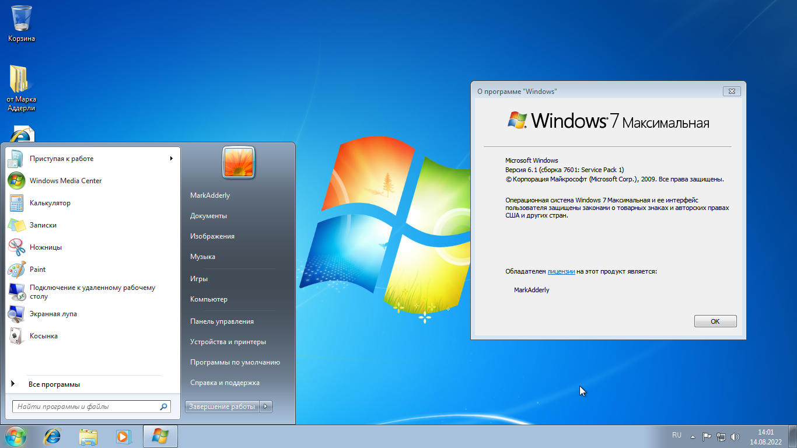
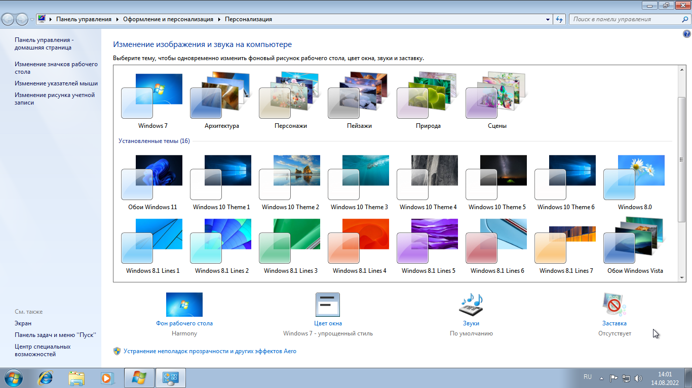
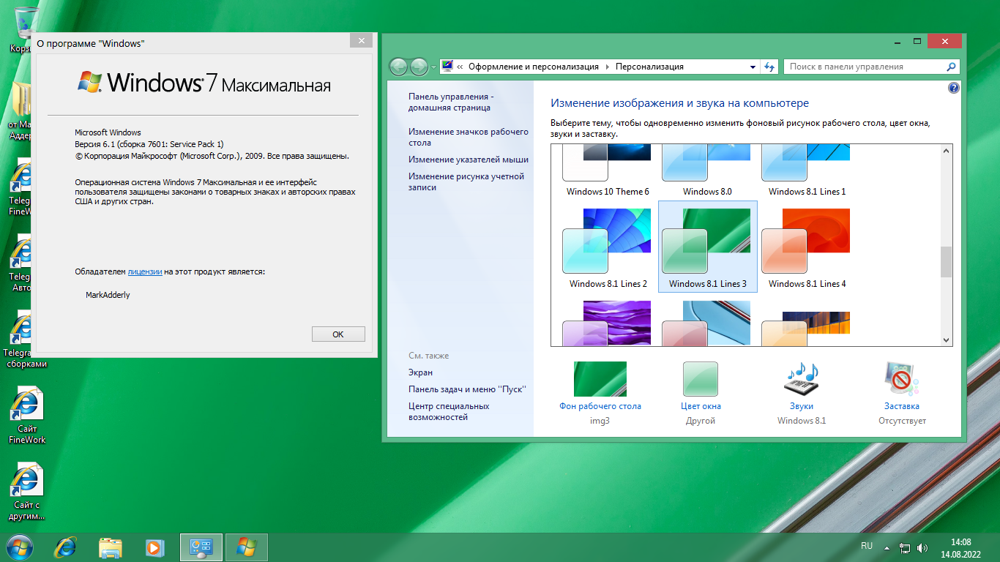
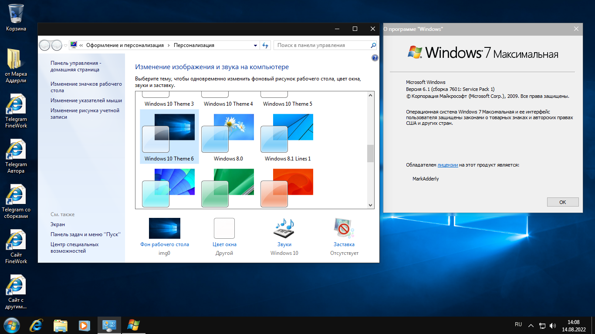
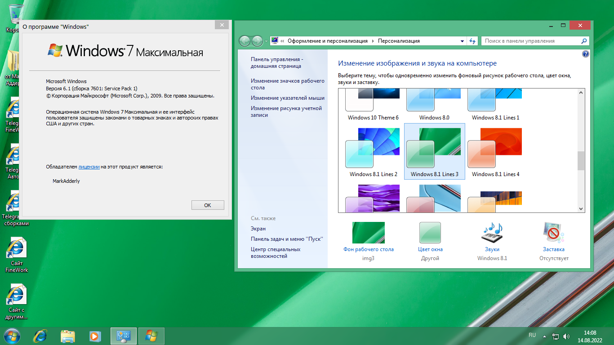
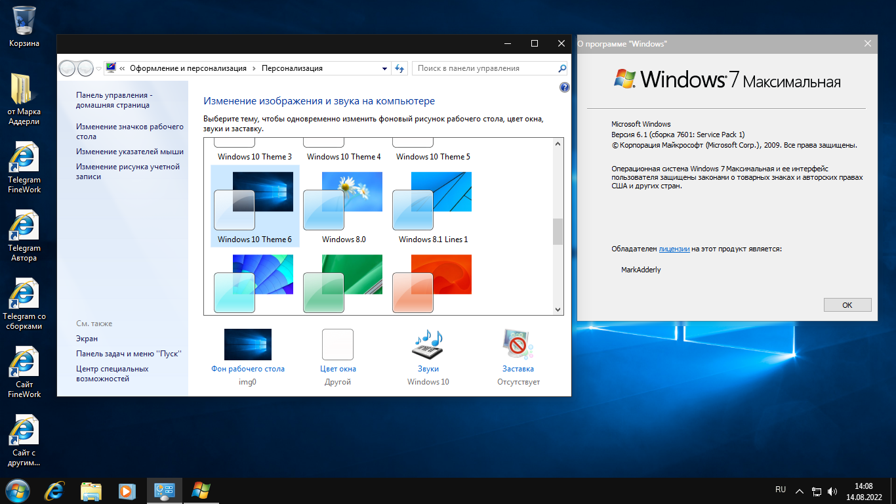
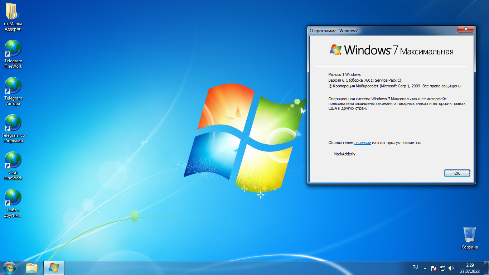
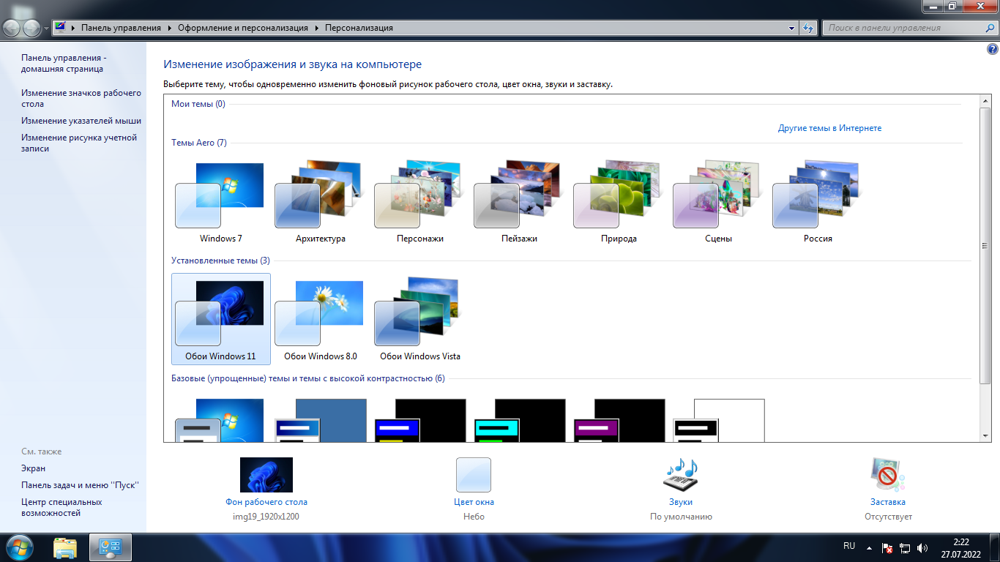
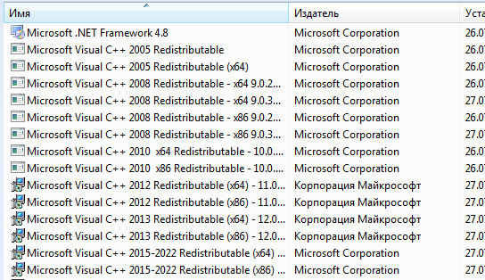

Сборки Windows 7
Windows 7 Ultimate V4 by Adderly (14.08.2022)



 



Обновления на 2011 год. (Service Pack 1)
Добавлен активатор.
Добавлена папка "от Марка Аддерли" в которой находятся инсталяторы самых нужных и авторских программ
Интегрированы Framework 4.8, 4.7.2, 3.5
Интегрированы Microsoft Visual Studio Redistributable 2005, 2008, 2010, 2012, 2013, 2015 - 2022, x86 и x64
Добавлены темы Windows 8.1, и 10 (по желанию можно удалить)
Добавлены темы с обоями Windows Vista, 11
Отключены гаджеты (по желанию можно вернуть)
Отключен файл подкачки
Добавлен диспетчер задач в ПКМ по рабочему столу
Образ весит 4.36 GB, после установки Windows занимает 13 GB.
Образ основан на официальном MSDN Windows 7.
Windows 7 Ultimate V3.1 by Adderly (27.07.2022)



Обновления на 2011 год. (Service Pack 1)
Добавлен активатор.
Добавлена папка "от Марка Аддерли" в которой находятся инсталяторы самых нужных и авторских программ
Интегрированы Framework 4.8
Интегрированы Microsoft Visual Studio Redistributable 2005, 2008, 2010, 2012, 2013, 2015 - 2022, x86 и x64
Добавлены темы с обоями Windows Vista, 11, 8.0
Отключены игры
Отключён Internet Explorer
Отключены компоненты для работы с мультимедиа "Media Center, Media Player"
Отключены компоненты планшетного пк
Отключены гаджеты
(по желанию можно вернуть)
Добавлен диспетчер задач в ПКМ по рабочему столу
Образ весит 4.33 GB, после установки Windows занимает 14.5 GB.
Образ основан на официальном MSDN Windows 7.
В отличии от 4 версии, нет никаких тем.
Смотрите так же:
Сборки Windows 8.1 Сборки Windows 8.0 Сборки Windows 10